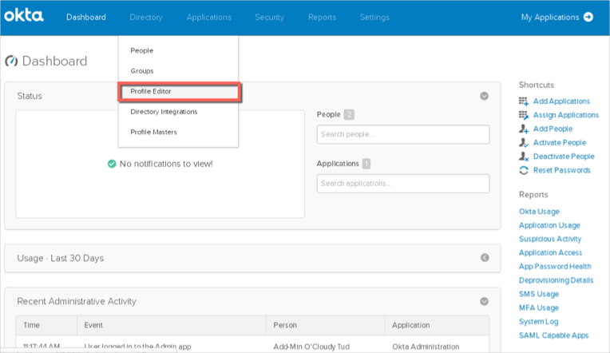
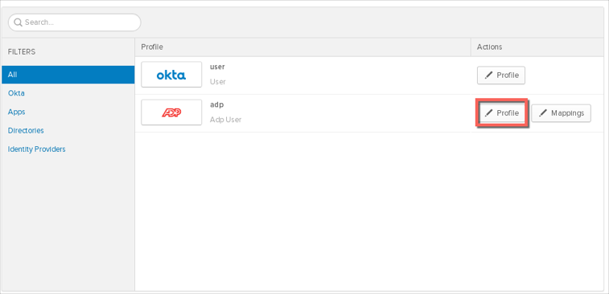
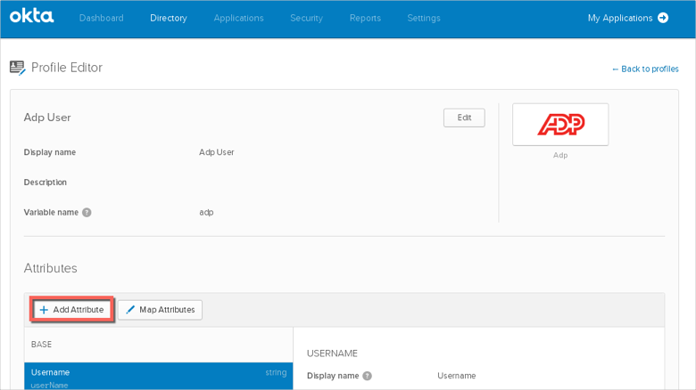
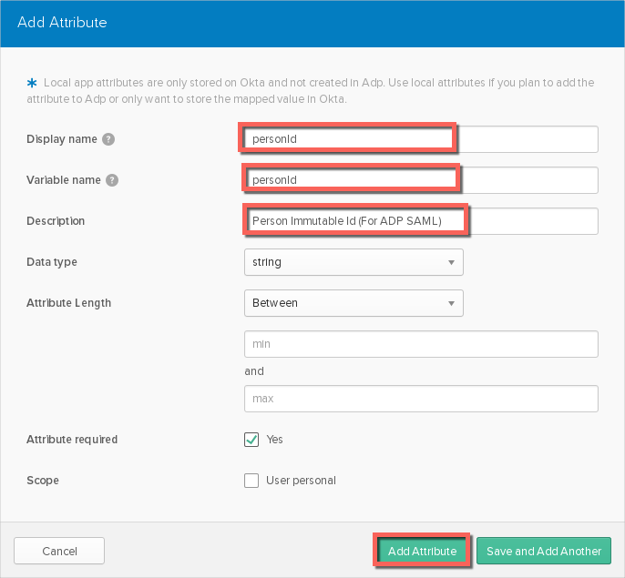
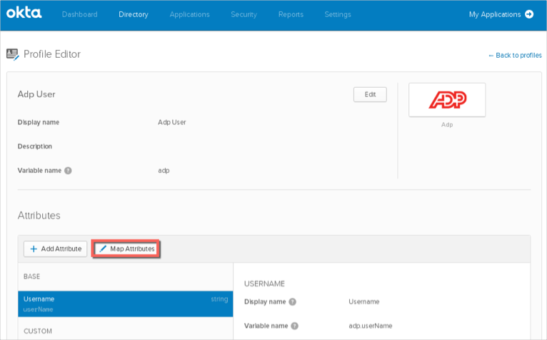
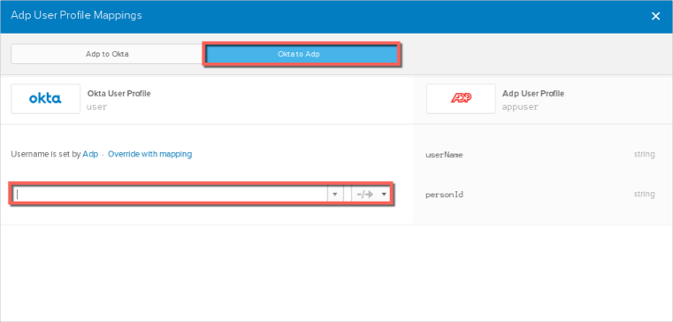

Contact the ADP Support team and request that they enable SAML 2.0 for your account.
Include the following:
IDP Issuer: Copy and paste the following:
Sign into the Okta Admin Dashboard to generate this variable.x.509 Certificate: Download, then upload the following in .cert format:
Sign into the Okta Admin Dashboard to generate this variable.The ADP Support team will process your request. After receiving a confirmation email, you can start assigning people to the application.
Once you have assigned the desired users the ADP application, you need to do the following:
In Okta, from the Admin dashboard, navigate to Directory > Profile Editor:

Search for your ADP application, then click the Profile edit button:

Click Add Attribute:

Set the Display name and Variable name to personId. (This is the person Id required for ADP to process the SAML response). Click Add attribute:

Once you have added the attribute, click Map Attributes:

In the Okta to ADP section, save the mapping that is specific to your tenant with ADP:

Done!
Notes:
IdP-initiated flows are supported.
SP-initiated flows and Just In Time (JIT) provisioning are not supported.